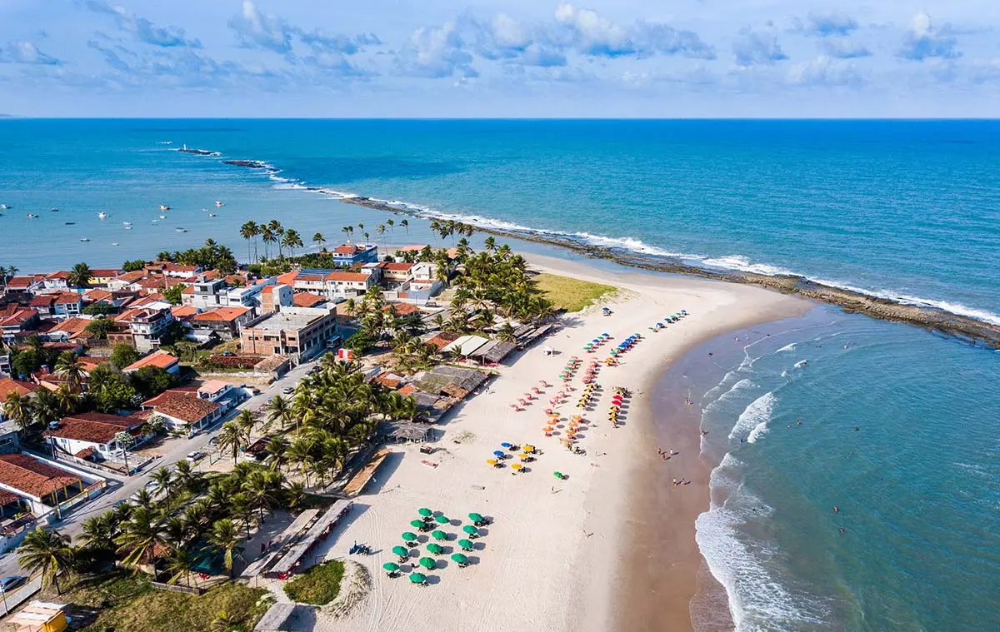

Cajazeiras
A terra que ensinou a Paraíba a ler.
Roteiros
Selecione as cidades que deseja visitar e monte sua rota.
A terra que ensinou a Paraíba a ler.

Vale dos Dinossauros.
Maior São João do Mundo.
A "Roliúde Nordestina".

Teatro Minerva e engenhos.
Cachoeira do Roncador.

Ponta do Seixas e Caribessa.

Areia Vermelha e a Fortaleza de Santa Catarina.
Praias tranquilas do litoral norte.

Terra dos potiguaras.

Falésias e praias do Conde.
Folia de Rua em João Pessoa
São João de Campina Grande e de Bananeiras.
Caminhos do Frio no Brejo.
Festa das Neves em João Pessoa
Festa do Rosário em Pombal
Romaria da Penha em João Pessoa